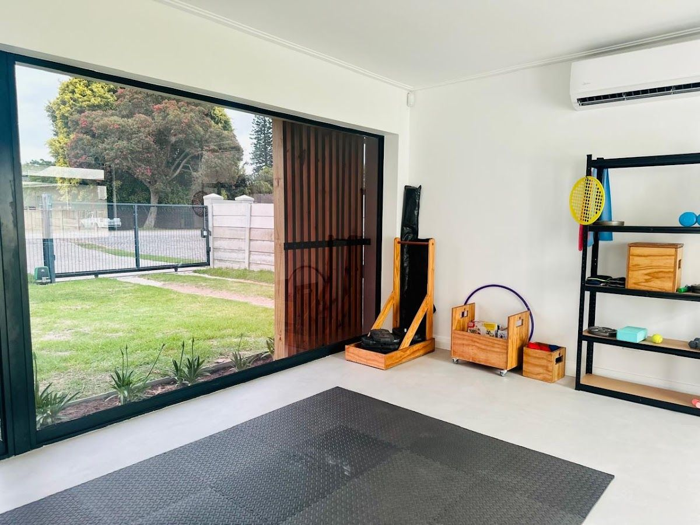
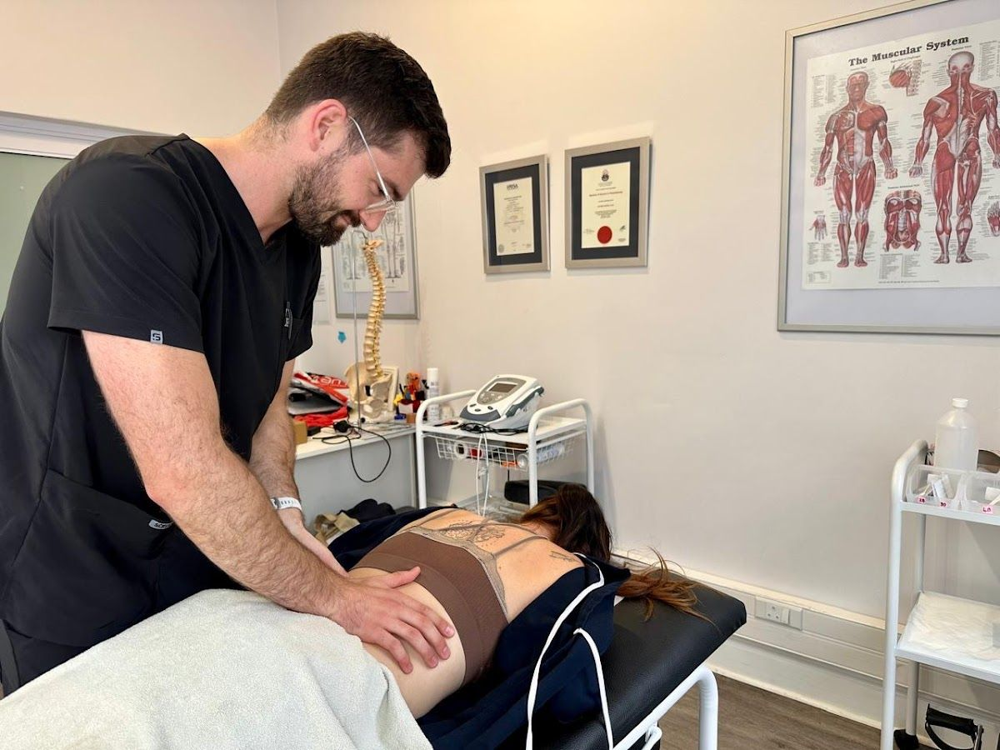

Flexible, patient-centred care in men's health, orthopaedic, and geriatric physiotherapy.
Get In TouchMatthew Aucamp Physiotherapy is dedicated to providing specialized care in men's health, musculoskeletal, orthopaedic, and geriatric care. Our services are designed to meet the unique needs of our patients, whether they're based in hospitals, old-age homes, or at home.
Founded with a passion for holistic and patient-focused treatment, our practice emphasizes flexibility and accessibility. We offer home visits and online consultations to ensure that our patients receive the care they need, wherever they are.
Our mission is to deliver compassionate and effective physiotherapy services. We believe in the power of personalized care and the importance of building lasting relationships with our patients.
Explore our range of specialized physiotherapy services designed to improve your quality of life and support your health journey.
Specialized physiotherapy addressing issues unique to men's health, including pelvic floor dysfunction and post-prostate surgery rehabilitation.
Comprehensive care for muscle and joint pain, using advanced techniques to enhance mobility and relieve discomfort.
Expert treatment for post-surgical rehabilitation, sports injuries, and chronic orthopaedic conditions.
Gentle and effective therapies for older adults, focusing on improving balance, strength, and overall mobility.
Here is what our clients say about us.
"I visited Matthew Aucamp Physiotherapy during the time when I suffered from extreme back pain, as well as after my back operation. Matthew is an absolute jewel who always puts his patients first and ensure that they receive the best treatment. He is a real gentleman and treats his patients with utmost respect. With Matthew you are not just a number, but a very valuable patient. I strongly recommend Matthew Aucamp Physiotherapy!"— Marie van Rooyen, ★★★★★
"We were so blessed when Matthew was suggested to us and we could not have asked for a better Physiotherapist. If I could give a million stars I would have. He really goes above and beyond for his clients. My father in law is showing more and more improvement and we could not have done this without him. I would suggest Matthew to each and everyone out there. So friendly and very easy to talk to."— Soné Strydom, ★★★★★
"Matthew Aucamp is an amazing physiotherapist. He’s extremely friendly, professional, and makes you feel comfortable from the start. He does a great job explaining exercises and treatment, and you can tell he truly cares about his patients progress. I highly recommend him!"— Niki Fouche, ★★★★★
"Matthew AuCamp is in amazing physio who helped me recover from a fractured ankle in record time. He provided a personalized treatment plan, clear guidance, and constant encouragement helping me regain strength and mobility much faster than I expected. Each session was professional, focused, and tailored to my progress. Thanks to Matt, I’m back on my feet and feeling stronger than ever. Highly recommend!"— Kay Brandt, ★★★★★
"My Dad was severely injured in a car accident and suffered a spinal injury. Matt has been working with him for the past while. He has been brilliant - his knowledge, understanding of various muscle groups and exercises have been very thorough and specific to my dad’s injury and progress. He is very calm but also very motivating at the same time. He understands how far to push the patient and also has a very high EQ when dealing with various situations, such as managing expectations."— Michael Rushmere, ★★★★★


We'd love to hear from you — reach out to us anytime.